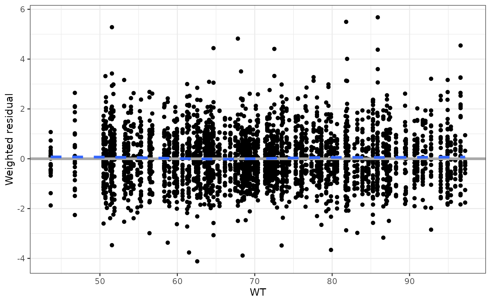
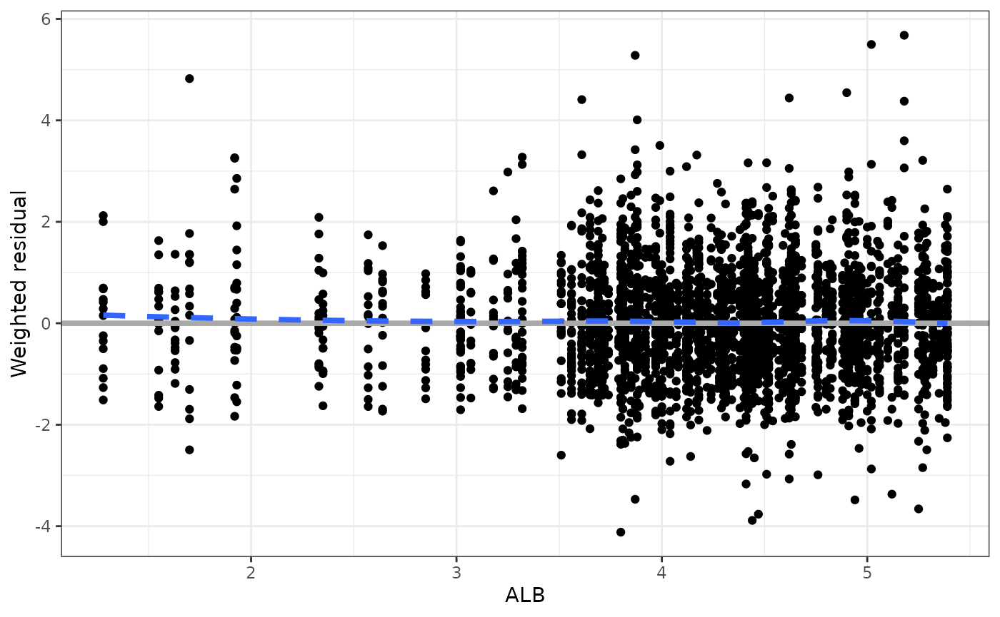
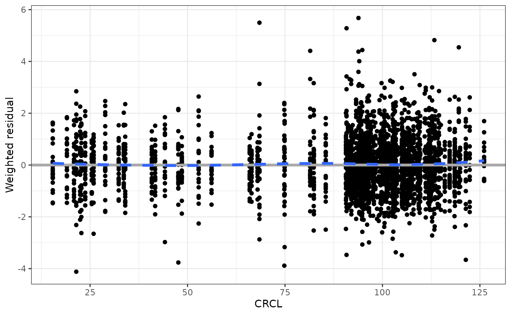
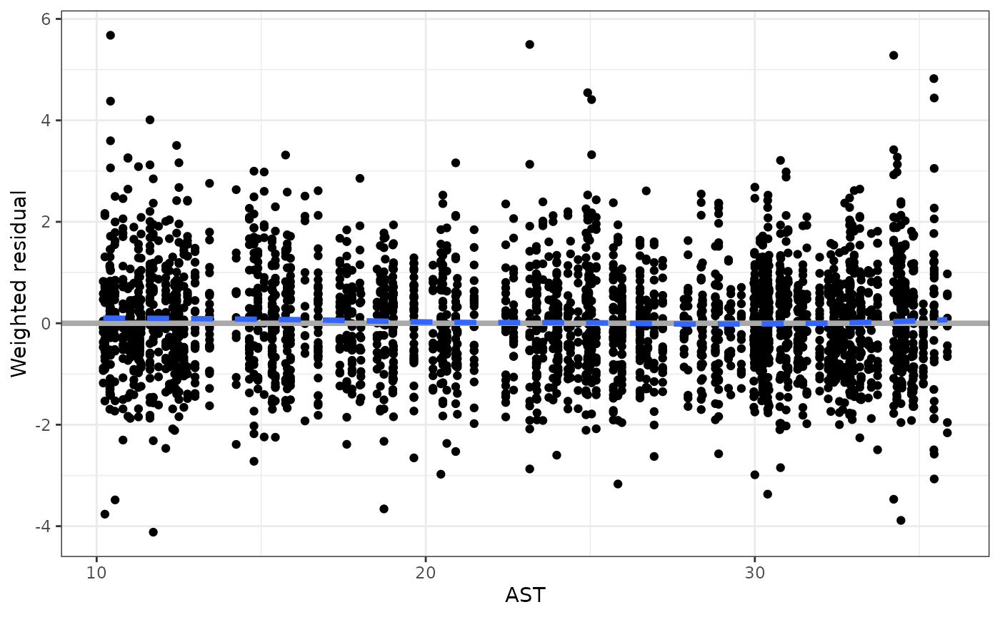
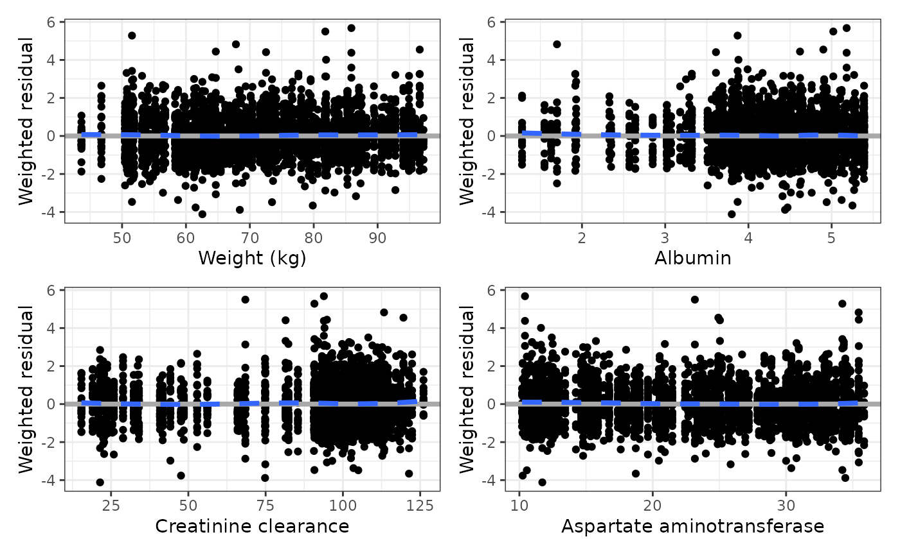
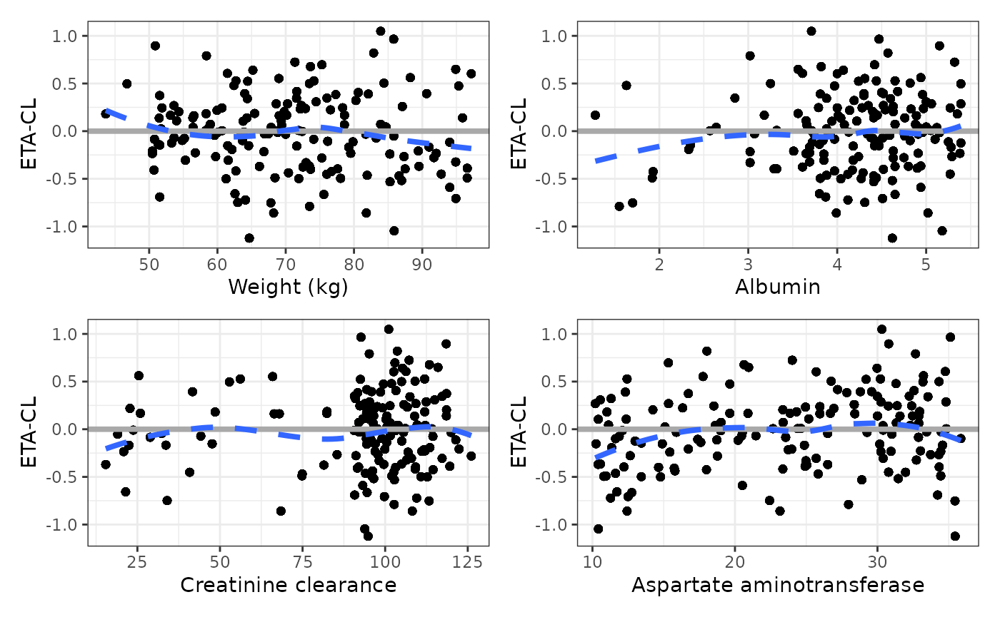
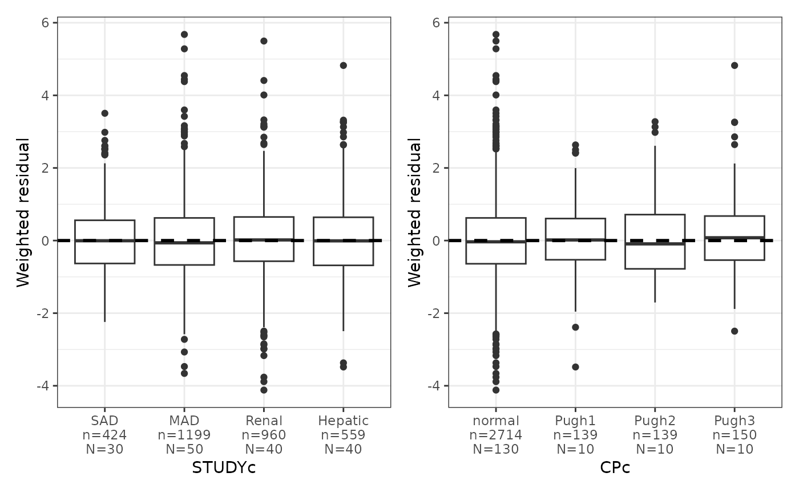
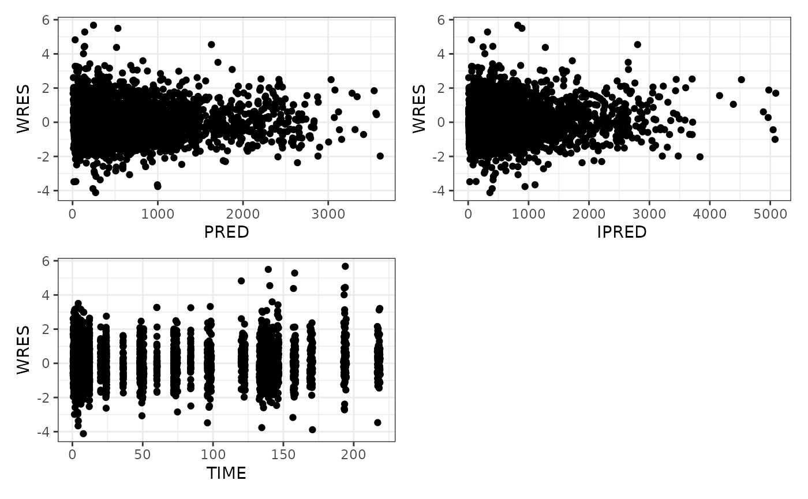

Set up
## Error in get(paste0(generic, ".", class), envir = get_method_env()) :
## object 'type_sum.accel' not found
library(dplyr)
data <- pmplots_data_obs()Vectorized plots
Some pmplots functions have been vectorized so that you can pass in a vector of inputs and get a list of plots back. This is a convenience feature that allows you to quickly make several plots. The intended use is to arrange those plots in a single page or multiple pages for display.
For example, we can plot WRES versus WT
wres_cont(data, x = "WT")## `geom_smooth()` using formula = 'y ~ x'
If we wanted to vectorize this plot and look at WRES
versus WT, ALB, CRCL, and
AST we would write
## $WT## `geom_smooth()` using formula = 'y ~ x'##
## $ALB## `geom_smooth()` using formula = 'y ~ x'
##
## $CRCL## `geom_smooth()` using formula = 'y ~ x'
##
## $AST## `geom_smooth()` using formula = 'y ~ x'
And we get a list of plots back. This list can be arranged on the fly with
covs <- c(
"WT//Weight (kg)", "ALB//Albumin",
"CRCL//Creatinine clearance", "AST//Aspartate aminotransferase"
)
wres_cont(data, x = covs) %>% pm_grid()## `geom_smooth()` using formula = 'y ~ x'
## `geom_smooth()` using formula = 'y ~ x'
## `geom_smooth()` using formula = 'y ~ x'
## `geom_smooth()` using formula = 'y ~ x'
In this example, we also made the vector of inputs full
col_label specification.
Another example are the eta_cont plots
id <- pmplots_data_id()
eta_cont(data, x = covs, y = "ETA1//ETA-CL") %>% pm_grid()## `geom_smooth()` using formula = 'y ~ x'
## `geom_smooth()` using formula = 'y ~ x'
## `geom_smooth()` using formula = 'y ~ x'
## `geom_smooth()` using formula = 'y ~ x'
What plots are vectorized?
Basically any plot where the user is required to identify the column
for plotting. So in the example, wres_cont asks the user to
specify what the continuous variable is for the x-axis. This plot is
vectorized. Same with wres_cat

In contrast, dv_pred is hard-wired to look for
DV and PRED. It is designed to look for only
one thing on each axis. This plot is not vectorized.
You can use pm_scatter_list as a vectorized
function to vectorize anything. So this allows us to do
pm_scatter_list(data, y = "WRES", x = c("PRED", "IPRED", "TIME")) %>% pm_grid()
Or just use lapply or purrr::map
## `geom_smooth()` using formula = 'y ~ x'
## `geom_smooth()` using formula = 'y ~ x'
## `geom_smooth()` using formula = 'y ~ x'
Please see the help topic for each function to know if that function is vectorized or not.